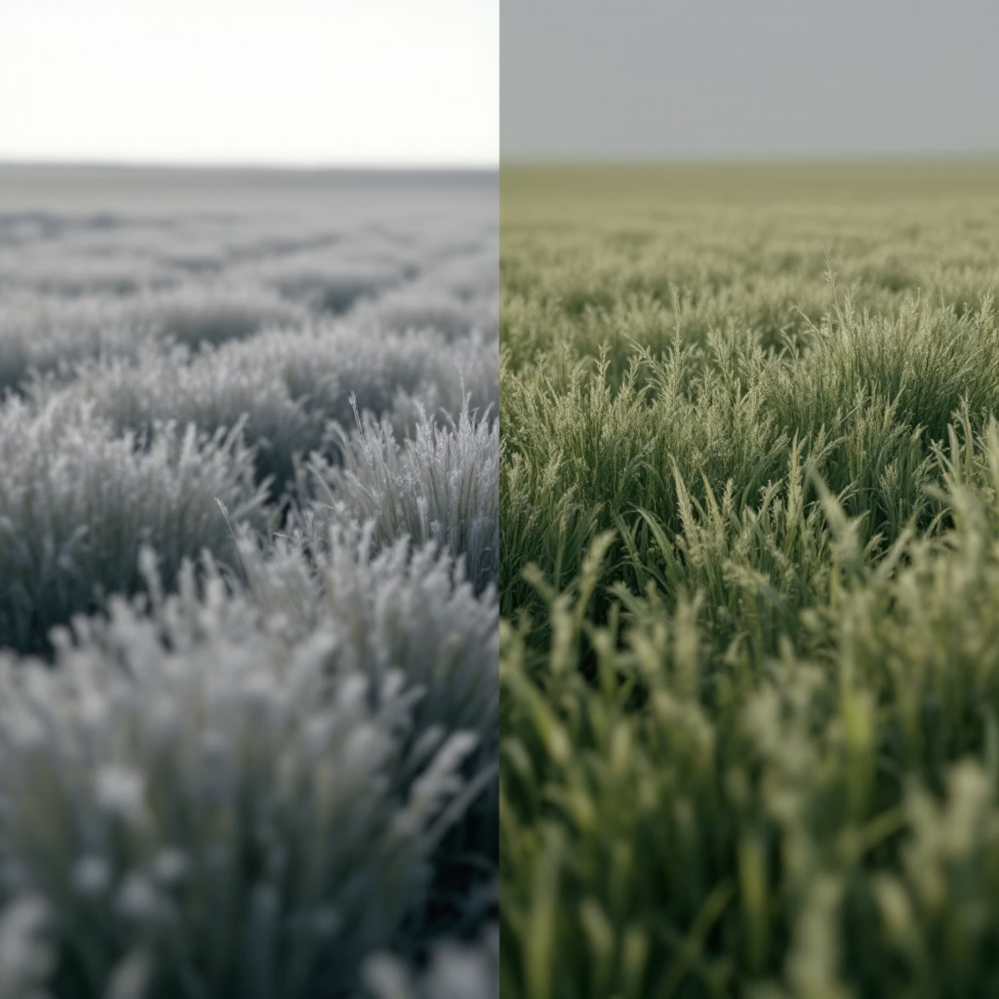
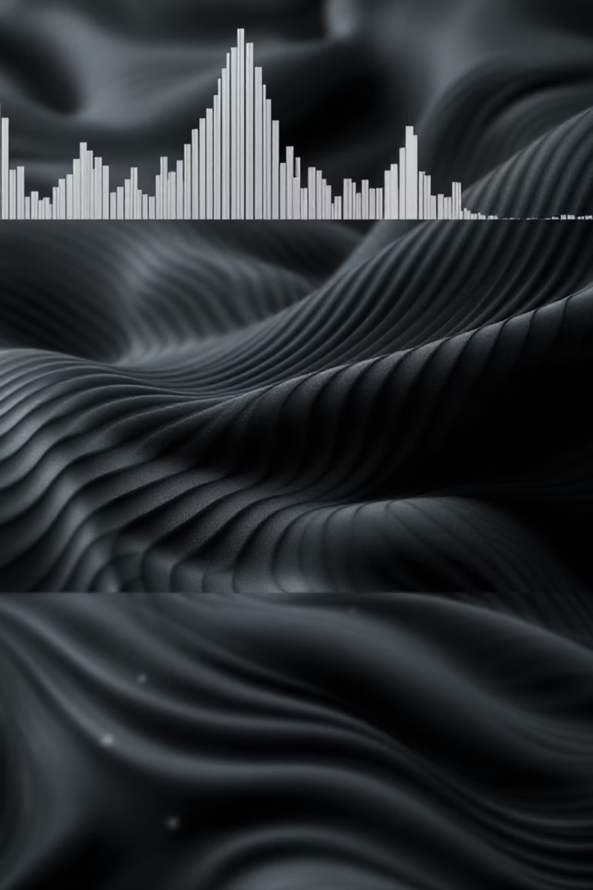
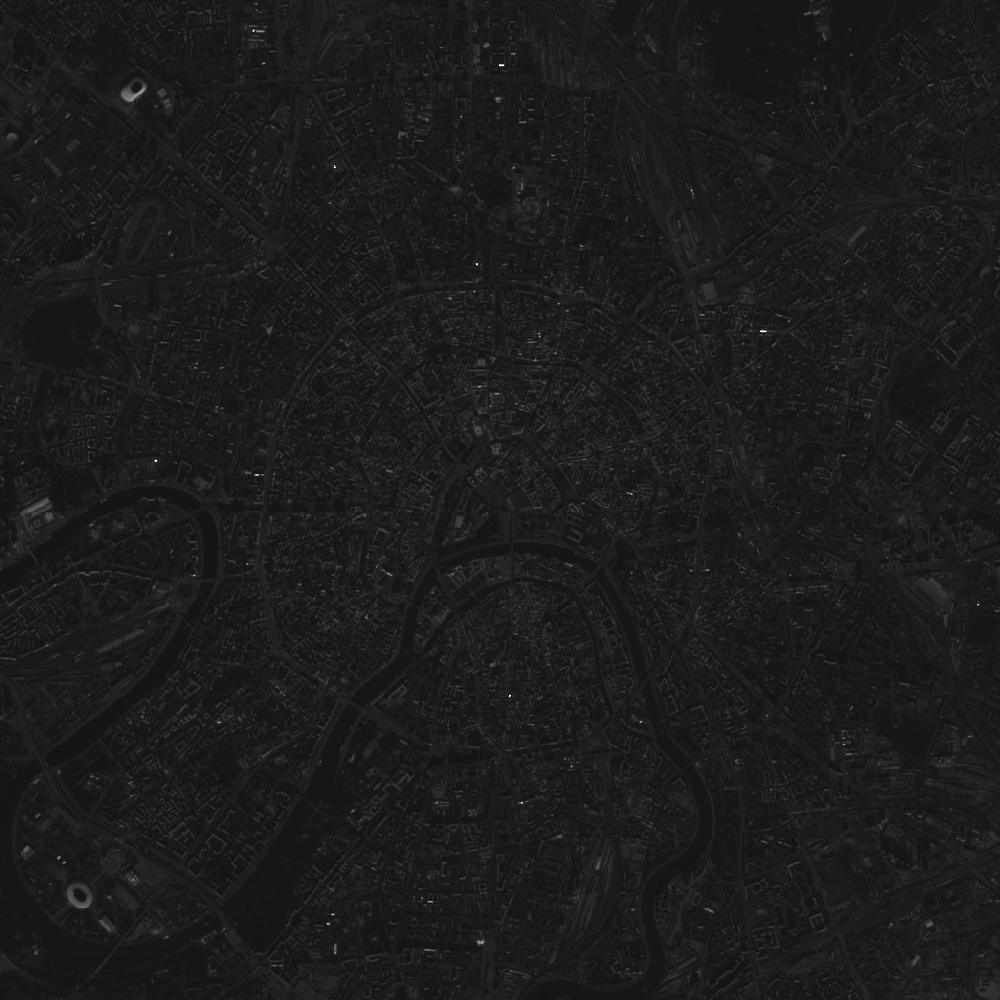
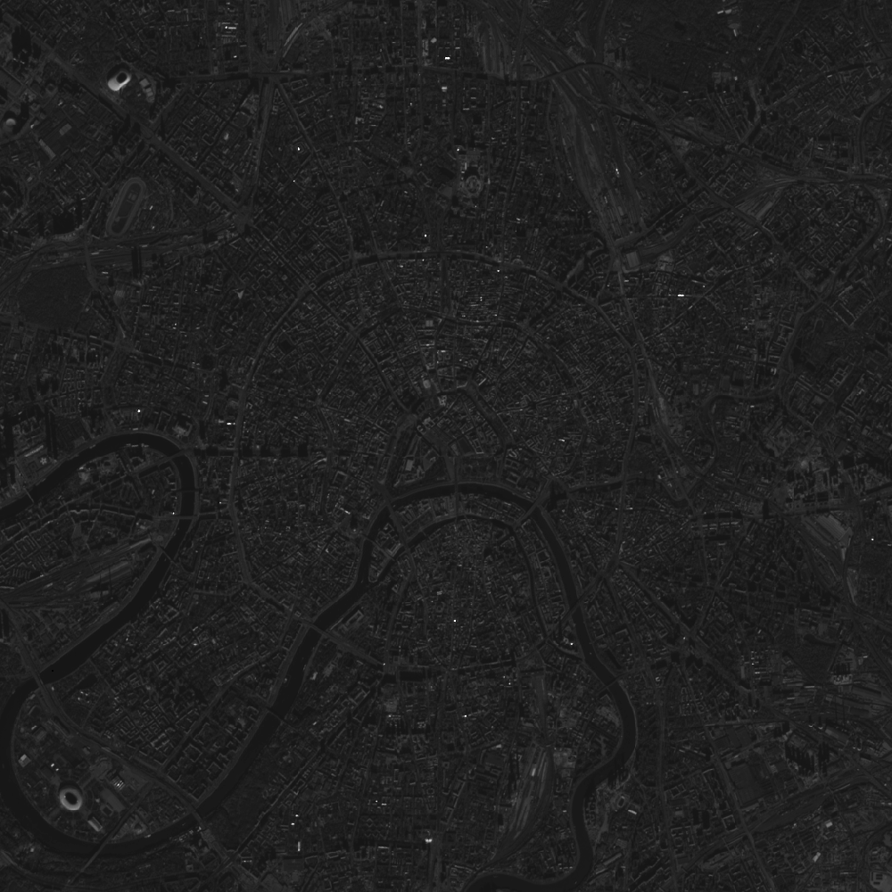
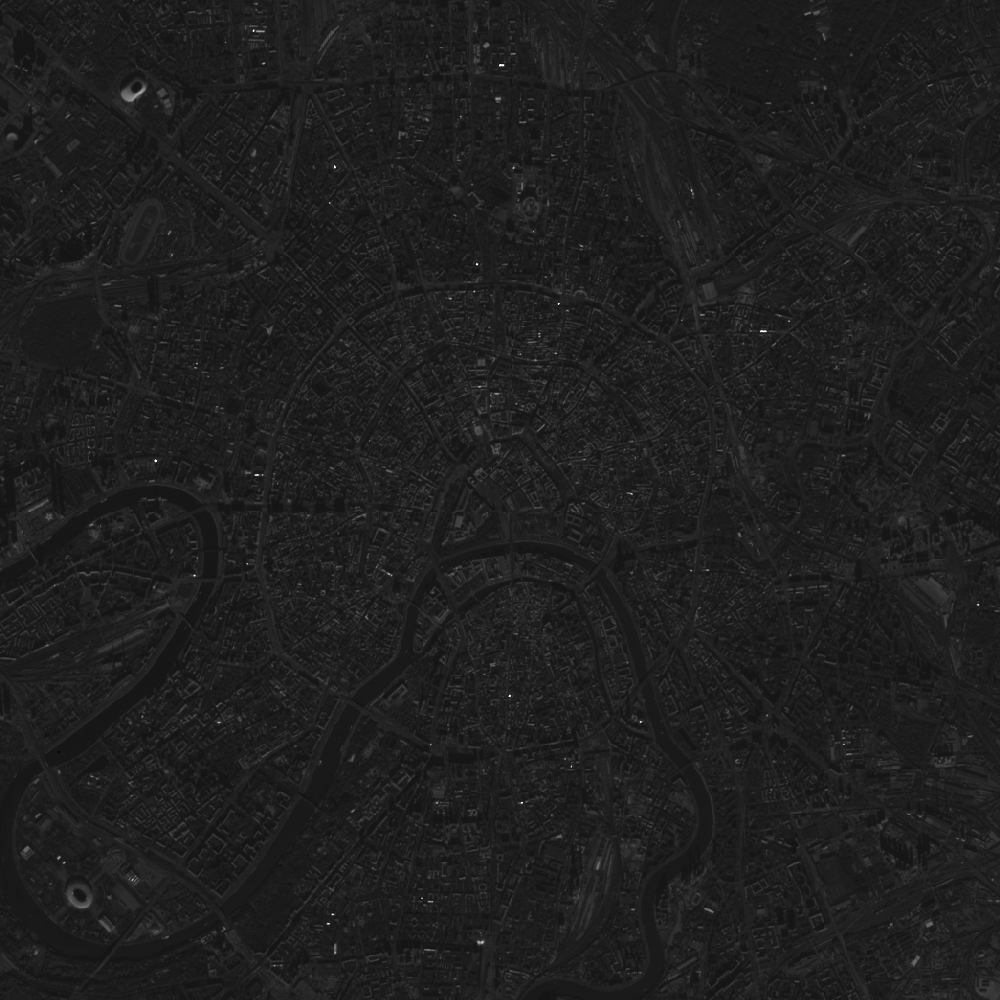
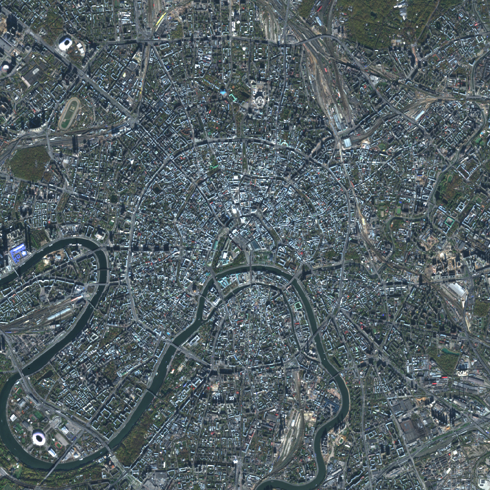

Контраст = Информация
- Что такое контраст и почему он важен?
- Контраст = Разница между темным и светлым (яркостный) и между цветами (цветовой).
- Низкий контраст: Данные «слиплись», автоматизация не работает. Это шум и ошибки классификации.
- Высокий контраст: Четкие границы, объекты легко отделить друг от друга. Это «разрешающая способность» для вашего алгоритма.
- Вот наглядный пример. Представьте, ваш алгоритм пытается найти границы поля на левом снимке — это почти невозможно. На правом — задача упрощается в разы. Контраст — это «разрешающая способность» для вашего алгоритма. Без него — только шум и ошибки классификации.



Цветной контраст: Три в одном
- Когда одного стандартного отклонения \sigma недостаточно.
- Многоканальное изображение
- Цветное изображение — это, по сути, 3 отдельных канала яркости (например, R, G, B) для каждой спектральной области.
- Индивидуальный \sigma
- Мы можем измерить контраст (\sigma) для каждого канала отдельно (\sigma_R, \sigma_G, \sigma_B).
- Недостаточно
- Измерение яркости по каналам не учитывает, насколько цвета отличаются друг от друга. Нужна единая мера цветового различия.
- С цветом всё сложнее. Мы можем измерить контраст в красном канале, в зелёном, в синем... Но как измерить, насколько, например, красный цвет отличается от зелёного? Для этого нам нужен более мощный инструмент.



Практическое применение \Delta E
- Где это работает в реальных проектах?
- Сегментация и Классификация
- Помогает точно разделить классы (например, растительность от асфальта) даже при схожей яркости, опираясь на цветовое различие.
- Контроль Качества Обработки
- Оценка цветовых искажений после процедур, как паншарпенинг или атмосферная коррекция. Низкое среднее \Delta E между исходным и обработанным снимком означает, что цвета сохранены.
- Выделение Границ Объектов
- Обнаружение границ не только по резкому перепаду яркости (L), но и по резкому изменению цвета (a, b) между соседними пикселями.
- И где это всё работает? При классификации \Delta E помогает точно отделить друг от друга объекты похожей яркости. При паншарпенинге — это контроль качества: мы считаем среднее \Delta E между исходным и обработанным снимком, чтобы поймать цветовые искажения. И, наконец, для поиска границ: где \Delta E между соседними пикселями резко скачет — там и проходит граница объекта.


Итог: Контраст — это ваш инструмент
- Яркостный Контраст (\sigma)
- Стандартное отклонение — ваш ключевой показатель пригодности сырых данных для анализа.
- Цветовой Контраст (\Delta E)
- Формула «расстояния» между цветами — ваш объективный судья для оценки качества и разделения объектов.
- Результат
- Четкие и информативные данные для MetaShape, QGIS и Python. Принятие инженерных решений на основе измеряемых цифр.
- Итак, подведём итоги. Контраст — это не про «красиво», это про «информативно». Теперь в вашем арсенале есть два мощных измерительных прибора: стандартное отклонение \sigma для яркости и Delta E для цвета. Используйте их, чтобы превращать сырые пиксели в точную и понятную информацию для любых геоинформационных задач.


Цветное изображение – 3 отдельных канала яркости.
- Контраст можно измерить для каждого канала (σR, σG, σB).
- Но этого недостаточно! Нужна единая мера цветового различия.
- Цветной контраст: Три в одном



